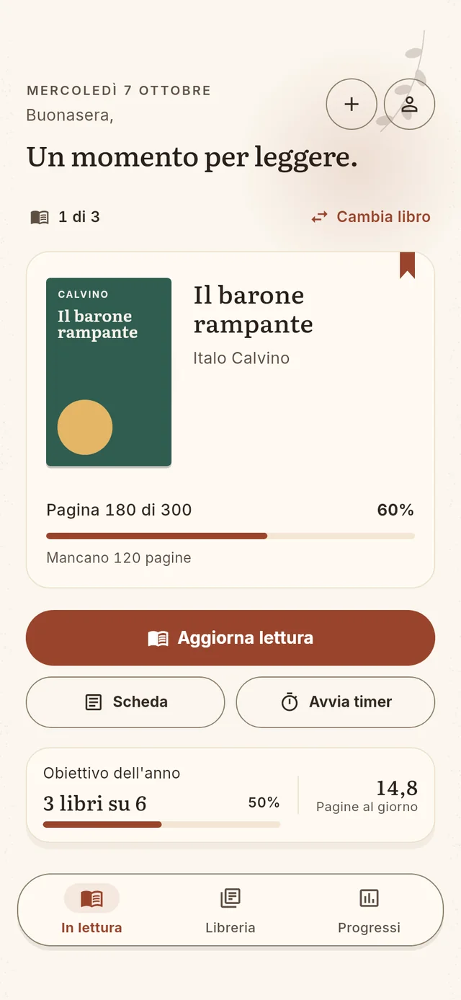
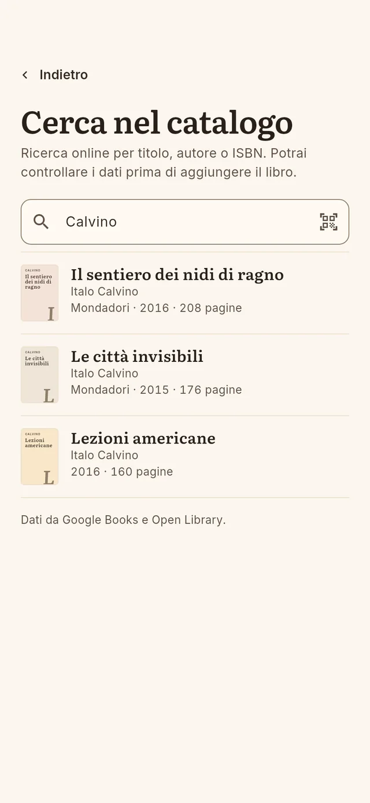
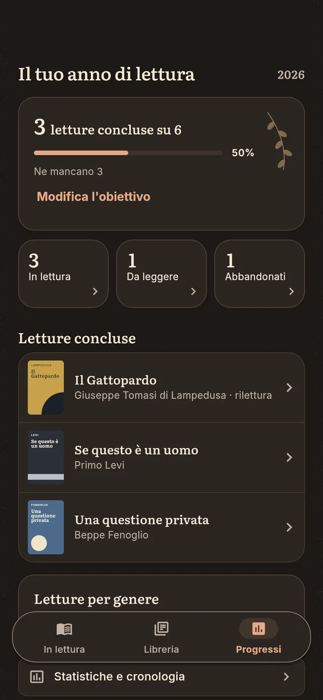

Diario di lettura per iPhone
Ogni libro,il suo tempo.
Avanzamento, timer, note e statistiche in un unico diario di lettura, in italiano. Nessun account, nessun server.



- Scanner ISBN
- Ricerca nel catalogo
- Timer di lettura
- Note private
- Statistiche e progressi
- Import da Goodreads e StoryGraph
- Export CSV
- Backup JSON e ZIP
- Promemoria di lettura
- Widget per la Home
- Tema chiaro e scuro
- Lettavia Pro
Le funzioni
Dalla prima pagina all'ultima.





01 · In lettura e timer
Il libro di adesso, sempre in primo piano.
Il libro attivo al centro, con avanzamento per pagine o percentuale e il pulsante «Aggiorna lettura».
- Timer con Pausa e Termina: il tempo entra nelle statistiche
- Frase del giorno e obiettivo annuale
02 · Libreria
Lo scaffale, a lista o a griglia.
Tutti i libri in un posto, con ricerca e filtri per stato: Da leggere, In lettura, Letti, Abbandonati.
- Vista a lista o a griglia
- Collezioni e generi con filtri e gruppi in Lettavia Pro
03 · Aggiungere libri
Tre modi per aggiungere un libro.
Un libro entra in libreria senza ricopiare i dati a mano.
- Scanner del codice ISBN con la fotocamera
- Ricerca nel catalogo: Google Books e Open Library
- Inserimento manuale
04 · Progressi
L'anno di lettura, a colpo d'occhio.
Obiettivo dell'anno, libri conclusi, letture per genere e cronologia.
- Con Lettavia Pro: velocità di lettura, serie di giorni e data prevista di fine
60%del libro in corso
3/6obiettivo dell'anno
14,8pagine al giorno
Valori d'esempio dalle schermate dell'app.
05 · Note e backup
Appunti privati, memoria al sicuro.
Ogni libro ha la sua scheda: note private, voto, date e storico delle riletture.
- Export in CSV
- Backup completi in JSON o ZIP
Inoltre
- Promemoria di lettura
- Widget per la Home
- Tema chiaro e scuro
- In italiano
Privacy e dati
I tuoi dati restano tuoi.
Nessun account e nessun server: libreria, note e statistiche restano sul telefono e nei backup creati dall'utente. La ricerca nel catalogo consulta Google Books e Open Library. Informativa sulla privacy
Importa da
- Goodreads
- StoryGraph
- CSV
Esporta e salva
- CSV
- Backup JSON
- Backup ZIP
Lettavia Pro
Di più, per chi legge molto.
Un acquisto in-app, annuale o mensile, con strumenti in più per organizzare la libreria e leggere i propri numeri.
- Collezioni personali
- Statistiche dettagliate: velocità, serie di giorni, data prevista di fine
- Generi con filtri e gruppi
- Palette Salvia e Miele
Lettavia Pro
Prezzo sull'App Store
Abbonamento annuale o mensile, acquisto in-app.
Quanto costa Lettavia?
L'app si scarica dall'App Store. Lettavia Pro è un acquisto in-app, annuale o mensile; il prezzo aggiornato è indicato sull'App Store.
Serve un account? Che fine fanno i dati?
Nessun account e nessun server di Lettavia: libreria, note e statistiche restano sul telefono e nei backup creati dall'utente.
Si può importare una libreria esistente?
Sì: Lettavia importa i file esportati da Goodreads e StoryGraph e i file CSV, ed esporta in CSV o in backup completi JSON o ZIP.
I dati si sincronizzano tra più dispositivi?
No, non c'è sincronizzazione cloud. Per spostare la libreria su un altro iPhone si usano i backup.